What you need
Smart kit ≈ $485–545 · whole garden ≈ $1185–1740 AUD. Prices checked on the shop pages are marked verified; the rest are estimates. The autoflower kit shares the valve, drip, dongle and camera.
| Part | Where | AUD | |
|---|---|---|---|
| Home Assistant hubRaspberry Pi 4/5 + case + SSD, or the planned Mac Mini | Core Electronics / already owned | $120–180 | estimate |
| Zigbee dongleSONOFF ZBDongle-E for Zigbee2MQTT | Core Electronics | $44.45 | verified |
| Smart valveSONOFF SWV-BSP Zigbee tap valve (AU thread) | SmartHome / homecurrent | $59.00 | verified |
| Drip linePope 13 mm Drip Eze 30 m + fittings | Bunnings | $56.09 | verified |
| DrippersPope trickler on spike 10-pack ×2 | Bunnings (20.64 ea) | $41.28 | verified |
| Soil sensors ×3ThirdReality Gen2 Zigbee, one per zone | Amazon AU (3 × 32.99) | $98.97 | verified |
| Air temp / RHSONOFF SNZB-02D Zigbee (VPD, blight risk) | Sonoff Australia | $21.13 | verified |
| CameraTapo C200 Wi-Fi camera (growth twin) | JB Hi-Fi | $44.00 | verified |
| Bed frame4 × 2 m sleeper bed kit or treated-pine sleepers + corner posts | Bunnings | $250–450 | estimate |
| Soil + compost≈2.4 m³ garden mix + compost, coarse base layer | Local landscape yard | $250–400 | estimate |
| Pale sand mulch2–3 cm light-tone mulch / washed sand top layer | Landscape yard / Bunnings | $40–80 | estimate |
| Seedlings & seedTomato, capsicum, chilli, eggplant, zucchini, beans, strawberry, herbs, lettuce | Nursery / Diggers | $80–140 | estimate |
| Stakes & ties6 × 1.8 m stakes, soft ties, bean support | Bunnings | $30–50 | estimate |
| FeedLiquid veg feed + pelletised chicken manure | Bunnings | $30–45 | estimate |
| Fruit fly traps2 × lure traps (Dec–Apr) | Bunnings | $20–30 | estimate |
You vs the AI
You do
- Build the bed and fill it
- Choose crops & buy seedlings
- Plant, stake and tie
- Approve or skip AI actions
- Pick, prune, refill traps
The AI does
- Reads soil at 3 depths, every 10 min
- Plans water from forecast + ET₀
- Opens the valve in the evening window
- Flags blight, fruit fly and end-rot risk
- Counts fruit and days to pick
Set up the AI system
- Home Assistant
Install Home Assistant OS on the Pi (or in a VM on the Mac Mini). Open homeassistant.local:8123 and create your account.
- Zigbee dongle
Plug the ZBDongle-E into a USB extension cable, away from Wi-Fi gear. Leave the Pi itself on Wi-Fi as usual.
- Zigbee2MQTT
Add the Mosquitto broker and Zigbee2MQTT add-ons, then point Zigbee2MQTT at the dongle (ember adapter).
- Pair sensors
Click "Permit join", hold each sensor's button, and name it by zone (soil_A_tomato…). Push them in at root depth.
- Valve + drip
Fit the SONOFF valve to the tap, run the 13 mm line around the bed, then add drippers at each plant. Pair the valve and test 1 min.
- Camera
Add the Tapo camera with its integration and aim it at the bed from the north side. Snapshots are saved daily.
- Weather
Add the BoM integration for Footscray and work out ET₀ from the forecast. Rain due within 12 h means the AI skips watering.
- Phone alerts
Install the HA Companion app and turn on actionable notifications so you can approve with one tap.
- Autonomy
Start on "Ask". After two weeks of good calls, move to "Act + tell" with a 30 L/day cap and an 18:00–10:00 window.
Planting steps
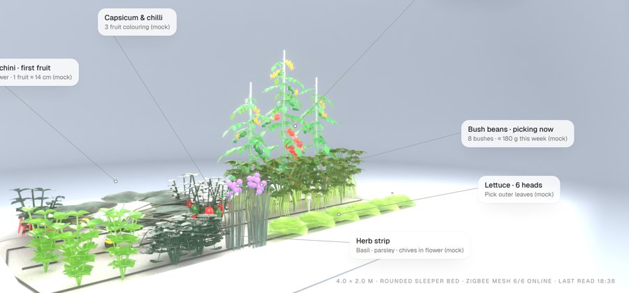
Plan bed & timing
Tomatoes on the south side, herbs and lettuce on the sunny north edge. In Victoria, plant out after Melbourne Cup (early Nov) once the soil is above 16 °C. Direct-sow beans and zucchini Nov–Dec.
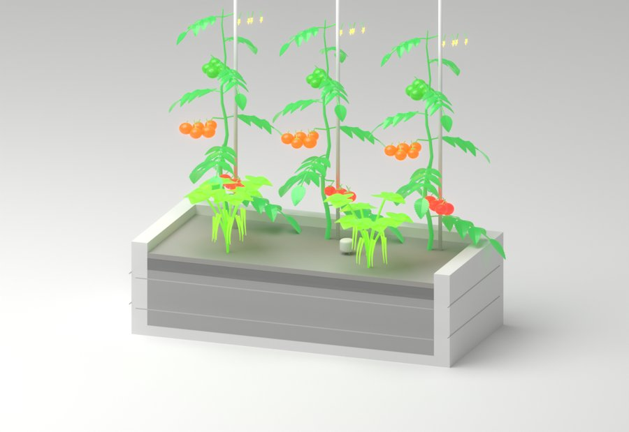
Build bed + sand soil
Coarse base layer, then 30 cm of compost-rich mix, then 2–3 cm pale sand mulch so the plants stand out against it.
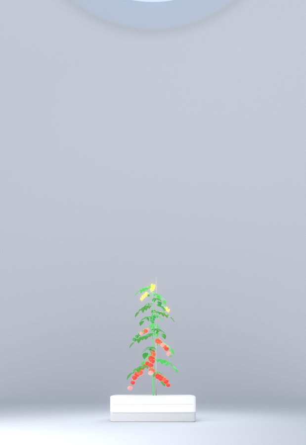
Plant / transplant
Harden off seedlings for 7–10 days. Bury tomato stems deep and stake them at planting. Spacing: tomato 60 cm, capsicum and eggplant 45 cm, beans 15 cm.
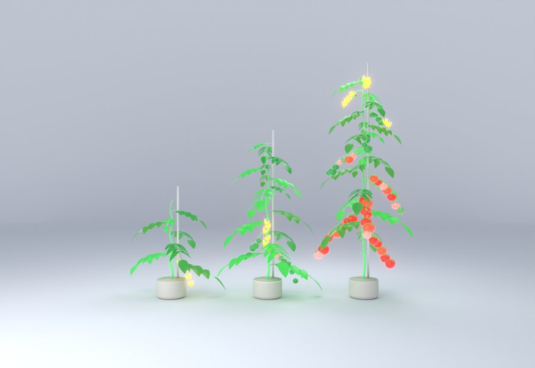
Water & feed
The AI handles water. You add liquid feed fortnightly from first flower and side-dress manure in mid-summer.
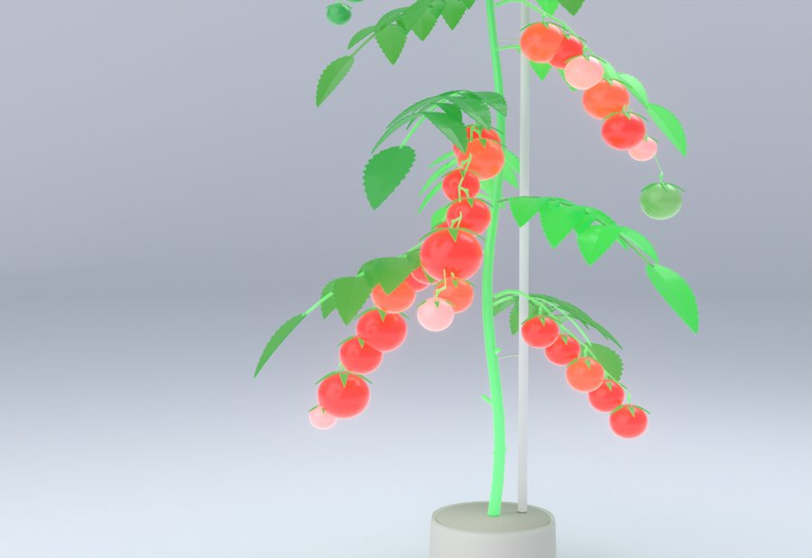
Grow, train, pest watch
Tie in weekly and pinch tomato laterals. Hang fruit fly traps from December. Remove lower leaves to cut blight risk.
Harvest
First tomatoes about 60–80 days after transplant. Pick beans every 2–3 days and zucchini at 15–20 cm.
Crop gallery
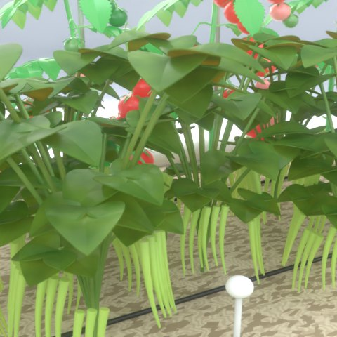
BeansDirect-sow Nov; pick every 2–3 days.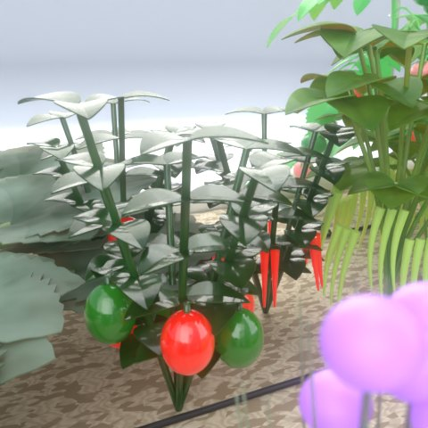
CapsicumNeeds heat; feed at flowering.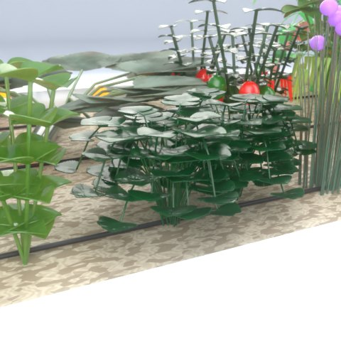
ParsleyCut outer stems; tolerates part shade.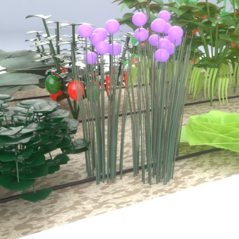
ChivesSnip to 5 cm; flowers are edible.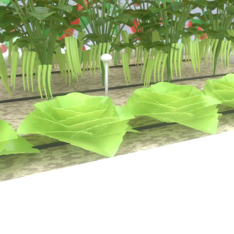
LettuceShade in heatwaves; pick outer leaves.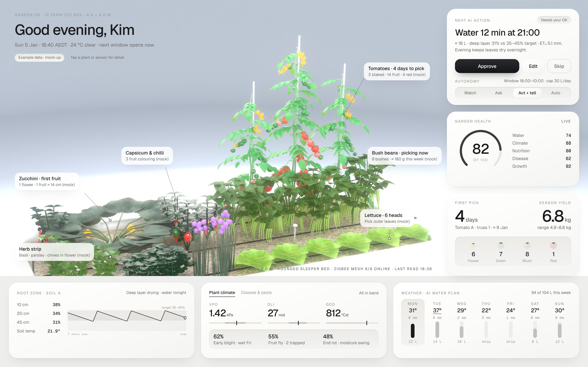
You now run this.
Same dashboard, but now you know what every number means and what's under the soil.